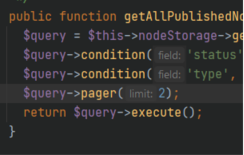

Les différents types de demandes
L'interface QueryInterface extends AlterableInterface et permet d'accéder à des méthodes
interface QueryInterface extends AlterableInterface
Obtenir les ids du type d’entité
getEntityTypeId();
Obtenir l'id de l'entité pour la query
Faire une recherche sur les champs
condition($field, $value = NULL, $operator = NULL, $langcode = NULL);
Créer une condition de requette ou une condition groupée
andConditionGroup();
Une conditon de groupe avec le ET
orConditionGroup();
Une conditon de groupe avec le OU
exists($field, $langcode = NULL);
Requete pour un champ qui n'est pas vide
notExists($field, $langcode = NULL);
Requete pour un champ qui est vide
Pagination
pager($limit = 10, $element = NULL);
Création d'une pagination pour la recherche en cours
Avec le pager on devra l’insérer dans la page
Dans un premier temps on ajoute le pager dans les conditions de la query (dans la gateway)
Puis dans le module on insère le pager

Ainsi que dans la twig

Définir un nombre de résultats voulus(attention à l’espace)
range($start = NULL, $length = NULL);
Définit le nombre d'éléments que l'on souhaite
Classer dans un ordre précis
sort($field, $direction = 'ASC', $langcode = NULL);
Classe les résultats par ordre croissant "ASC" ou décroissant "DESC"
Compter le nombre de résultats
count()
Compter le nombre de résutats dans la requete
Les autres
tableSort(&$headers);
Autorise les tables classable dans la requete
accessCheck($access_check = TRUE);
Vérification des accès
currentRevision();
Limite la requete à des default revisions
latestRevision();
Requete de la derniere revision
allRevisions();
Requete sur toutes les révisions